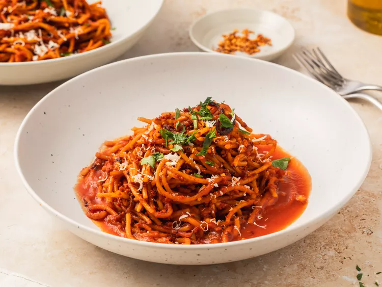

Home
Spaghetti

Ingredients
- 1 pound spaghetti
- 2 tablespoons olive oil
- 1 onion, chopped
- 2 cloves garlic, minced
- 1 (28 ounce) can crushed tomatoes
- 1 teaspoon dried basil
- 1 teaspoon dried oregano
- Salt and pepper to taste
- Grated Parmesan cheese
Directions
- Cook spaghetti according to package instructions. Drain and set aside.
- In a large skillet, heat olive oil over medium heat. Add onion and garlic, and cook until softened.
- Stir in crushed tomatoes, basil, oregano, salt, and pepper. Simmer for 20 minutes.
- Toss cooked spaghetti with the sauce. Serve with grated Parmesan cheese.